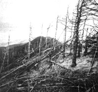

There's something in the air, and it's most certainly not the fresh breath of spring.
In 1982, the Federal Republic of Germany reported that 8% of its forests had lapsed into serious decline. A number of species showed yellowing, loss of leaves, deformed shoots, deteriorating roots, thinning crowns, and loss of growth . . . and many trees had died. Cries of alarm went forth. But by the next year the damage estimate had grown to encompass a full 34% of Germany's forests-including 76% of all firs, more than 40% of spruce and pine, and half of all the trees in the famous Bavarian and Black forests. The total area affected by such tree damage in Germany is now estimated to be almost 6,200,000 acres, and sick trees in other western European nations-such as Austria, Switzerland, and France-bring the total threatened acreage to almost 10,000,000.
In the U.S.-after several years of sporadic reports of forest damage at high-elevation locations such as Camel's Hump, Vermont, where 70% of the red spruce have died since 1964-researchers around the country are beginning to confirm that forest damage isn't confined to the Northeast.
At altitudes above 6,300 feet on Mount Mitchell, North Carolina, and the surrounding Blue Ridge and Smoky Mountain peaks, the growth rate of red spruce and Fraser fir has dropped 40% since the early 1960's, and many trees have died. The defoliated white corpses of many of these evergreens stand as testimony to some new weakness . . . one that can't be attributed solely to known natural causes. For example, though red spruce may have become more susceptible to the ravages of the balsam woolly aphid, a long-standing enemy, the effects of that pest don't explain the dieback of Fraser fir, which is immune to that insect's attack.
At lower elevations, the United States Forest Service has tentatively concluded, stands of southern yellow pine have for some reason experienced a 25% growth decline in the last 30 years. And researchers in the Ohio Valley have identified damage and growth declines of evergreens and hardwoods over an area stretching from Wisconsin through Indiana and Ohio. What's more, besides the well-known damage to evergreens in New England, maples in parts of Vermont have recently been found to be reproducing poorly and to have declined 25% in overall mass.
What's happening to the world's forests? Are these die-offs attributable to natural stresses? Few scientists believe so. More and more experts are concluding that the trees are succumbing, at least in part, to man-made pollution-in the forms of acid rain, ozone, nitrogen oxides, sulfur dioxide, and toxic heavy metals. It may be that just one of these toxicants is overwhelming trees in isolated instances, but in general the problem seems to be the combined effects of all or many of these pollutants.
Because the Germans have such a serious problem, they've been quick to search for the specific causes of forest decline. Though German scientists were ready initially to place the blame on acid rain and the aluminum it can liberate from a bound state in soil, a closer look pointed out a number of deficiencies in that theory. For one, forest damage has been found in acid and alkaline soils alike. What's more, an examination of soil chemistry showed that natural (humic) acids in the organic litter layer on top of forest soil could be a much more powerful influence than low-pH rainfall . . . particularly in soils that lack calcium carbonate for buffering. In fact, if a cubic yard of 3.5-pH rain were to fall on a square yard of forest soil covered with a two-inch layer of organic matter, the total acidity of the natural acids in the soil would be 500 times that of the rainfall. The effects of these natural acids, which might typically have a pH of 4.0 to 4.5, would easily outweigh the influence of acid rainfall, even though the rainfall might have a lower pH.
An interesting point to ponder concerning acid rain, however, is that sulfur dioxide gas (a precursor of sulfuric acid rainfall) can damage plant life. Before SO 2 ever becomes an acidic liquid, it can significantly stunt tree growth. These effects have been seen at concentrations of 25 to 50 micrograms per cubic meter-about half the U.S. standard for public health (80 micrograms per cubic meter). Thus the effects of sulfur dioxide pollution on trees could be most serious before the gas becomes acid precipitation.
Ozone is another potential contributor to forest decline. Excessive levels of O 3 produced from nitrogen oxide reacting in sunlight with hydrocarbons from car exhaust, woodstoves, etc.-have long been known to harm plants. At concentrations not even twice as great as natural background levels, ozone can degrade the waxy protective layer of leaf tissue, which leads to leakage of plant fluids. At present, this surface breakage is the strongest link known to widespread calcium and magnesium deficiencies. The most plausible explanation of these deficiencies-and of the attendant yellowing seen in so many forests today-is leaf damage from a combination of ozone and acidic water.
Ozone is particularly worrisome because it can damage foliage at concentrations of 100 to 200 micrograms per cubic meter if these conditions occur on six to eight successive days . . . conditions that, in the last 20 years, have been common over much of the earth's surface. (Oddly, swings into and out of the damaging concentration range are more destructive than consistently high levels. There is, however, almost always fluctuation, because the production of ozone requires sunlight.) Levels of O 3 in German forests are known to average 100 to 150 micrograms per cubic meter, and peaks in the 400 to 500 range aren't unusual. In the U.S., ozone is largely blamed for an 80% decline in forest productivity in the San Bernardino Mountains east of Los Angeles.
The other main progenitors of acid rain, nitrogen oxides, can also, in their gaseous phase, damage trees. Nitrogen is a powerful fertilizer, and both NO x and nitric acid can be absorbed through leaf tissue and put to work as nutrients. But when a plant is presented with an overabundance of food, two problems can afflict it. First, the roots may reduce their uptake of water and minerals from the soil, which may lead to drought sensitivity and mineral deficiencies. And second, to compound the initial problem, a tree may produce tender new growth after receiving a breath of NO x -even though autumn has arrived and a killing frost is on its way. The normal (protective) dormancy periods may be disrupted.
Another clue to the puzzle of forest decline is that soils in many areas of heavy damage contain abnormally high levels of toxic heavy metals. We've already mentioned aluminum, but lead, cadmium, zinc, arsenic, copper, and chromium are also prevalent and harmful. On Camel's Hump in Vermont, lead has doubled, zinc is up 70%, and copper concentrations have risen 40% since monitoring began about 20 years ago. The Oak Ridge National Laboratory has identified toxic levels of zinc, copper, chromium, and aluminum in trees. Tentative results from soil tests on Mount Mitchell show concentrations of lead more than five times higher than would be normal for an urban area. All of these metals can stunt the growth of trees, make them more susceptible to disease, or even kill them outright.
The major sources of heavy metals are industry (largely smelters) and vehicles, and it's known that metallic compounds thrown into the air from smokestacks and tail pipes can travel some distance from their sources. Studies of the emissions from International Nickel's 1,250-foot-high stack show that 40% of the heavy metals that leave the chimney travel at least 35 miles before being deposited on the ground. Their mobility is probably linked to the acidity of moisture in clouds, which allows the metals to react with other compounds to form transportable molecules. Thus acid rain and toxic metals may again be "working together" in a damaging manner. There's also the possibility, however, that cars and trucks closer to the damaged trees are causing much of the problem.
It's clear, then, that there's little likelihood that the decline of forests around the world can be rightly attributed to a single pollutant. Scientists generally agree that the destruction is being brought on by an amalgam of atmospheric contaminants spewed forth by power plants, industry, and vehicles. It's true that this trend began in the U.S. before the Clean Air Act's provisions were in place, but there's quite a bit of evidence that the improvement in air quality since 1970 hasn't been sufficient to halt forest decline.
No one can say just how many trees could be saved by further emission controls. For example, it's possible that cutting sulfur dioxide emissions by, say, 20 or 30% would not reduce acid precipitation at all, because there's evidence that the relationship between sulfur dioxide in the air and low-pH rainfall isn't linear. (See the sidebar for more discussion of this point.) On the other hand, reducing emissions by 90% would be almost certain to yield an improvement.
Since the Clean Air Act was passed, sulfur dioxide emissions have leveled of and are expected to remain fairly constant through the end of the century-even without new controls. Nitrogen oxides, on the other hand, have doubled since the early 1950's and are continuing to rise. As of 1980, NO x contributed about 30% of the acid precipitation problem, but its share is expected to rise over the next 15 years.
Most current legislative proposals suggest that coal-burning utilities should further reduce sulfur dioxide emissions by about 10 to 12 million tons per year. Various experts estimate that the cost of these improvements would increase electrical rates between 4 and 15% on the average. But customers of particularly dirty utilities, such as those in the Ohio Valley, would be hardest hit.
Nitrogen oxide emissions could be reduced by about 50% through combustion modification practices . . . and at a cost of only about a 1% rate increase. Beyond that point, however, more complex techniques would be needed. Selective catalytic reductions could cut power plant emissions of NO x by 90% while causing a rate increase of 5 to 8%. Of course, though power plants are the single largest source of NO x today, they produce less than half of the total nitrogen oxide emissions in the U.S. For effective control, industry NO x emissions would also have to be controlled, and the transportation sector-despite dramatic reductions already made through the use of catalytic converters-would have to make still further improvements. (Yes, your car's catalytic converter is here to stay.)
With reductions in NO x and hydrocarbon emissions (through the use of catalysts, for example) come concomitant cuts in ozone levels, because the concentrations of the first two compounds (along with sunlight levels) affect the formation of 03. This emphasizes the importance of regulating nitrogen oxide emissions, and suggests that further improvements may have to be made on emitters of hydrocarbons, such as cars and residential heating systems.
Lead emissions from automobiles are slated for further reductions as leaded gasoline is phased out in 1986. Control of other heavy metals, however, is more problematic. Industrial processes (and particularly smelters) would need innovative controls to achieve major emission reductions.
At present, Japan is the world's model for stringent emission controls. Not only does that country have stricter vehicle pollution regulations than the U.S., but it's also the only government to limit nitrogen oxides coming from power plants. Cutting NOx by 73% and SO2 by an even greater amount has cost the utility customers of Japan a rate increase of about 25%. As a result, Japan's air quality has improved dramatically in the last 20 years.
High technology isn't the only way to trim emissions, however. In the U.S., improvements in efficiency-resulting in the use of less energy-have done as much to help clear the air as have stack emission controls. And the clean air of Japan is, to a significant extent, a result of that country's conservation practices: The Japanese use 2.7 times less energy per person than the American populace. If we were to institute plausible conservation standards for just water heaters, refrigerators, and air conditioners, we could cut sulfur dioxide emissions by 12 to 20% by the turn of the century . . . and at a cost equal to 1% of the investment in flue gas desulfurization equipment that would be needed to do the same job. Furthermore, every ton of recycled copper prevents 2.7 tons of SO 2 from entering the atmosphere; that technique alone has cut Canada's sulfur dioxide emissons by a million tons per year, 21% of its total output. Similar savings can be achieved by recycling paper and aluminum. Reusing metals also reduces the burden of toxic metal pollution by limiting mining and smelting, two major sources.
No matter what specific relationship acid precipitation may have to other forms of atmospheric pollution, and no matter which one or what combination of these is causing the obvious damage to our ecosystem, burning less fossil fuel is bound to reduce the concentrations of the majority of forms of atmospheric pollution in our environment. Our best investment in pollution abatement is to put our money in efficiency, recycling, and appropriate renewable energy sources . . . to learn how to live with our ecosystem instead of attempting to patch it up with afterthought repairs. The central feature of any natural system is the manner in which all parts are inevitably interrelated, forming a circle of function; in the long run, technology won't allow us to stand outside that circle. As it goes, we go.
How are the trees in your yard doing?
It should be fairly clear by now that the decline of forests in North America and Europe can't be specifically pinned on acid rain. A collection of atmospheric contaminants, including acidic deposition, is probably to blame. Does this mean that the hullabaloo over acid rain in recent years has been overinflated or that the current federal policy of waiting for the results of further research before taking action is warranted? Let's take a brief look at the state of knowledge about acid rain as of this writ ing (late 1984); then you decide.
There's nearly unanimous agreement that acid rain does exist and that it's at least a local problem. Furthermore, few scientists doubt that the emission of sulfur dioxide and nitrogen oxides from power plants, industry, and vehicles can and does cause acid deposition. From those two points, however, opinions diverge. Perhaps the most important and perplexing problems are these: [1] Can the emission of pollutants from a particular source be linked to acidic products falling out of the sky hundreds of miles away? [2] How do the gaseous emissions become acidic products, and what controls the degree of their formation? [3] What effect does acid deposition have on living things?
[1] Despite the fact that the complexities of the transportation and dispersion of clouds of pollutants are not well understood, scientists have been able to develop models that accurately predict where these plumes will go. They have theories that can be experimentally verified, but they lack a complete explanation of why the theories work. (This is called a heuristic model by the scientific community.) Of course, it's not very satisfying for the researchers to say, "We know what happens, but we don't know why. " But for the purposes of being able to say just who's polluting what, the evidence is satisfactory. The emissions from a coal fired power plant in the Ohio Valley can be followed to the Adirondack Mountains . . . or to Canada. So when you read or hear that more research is needed to determine how acid rain is transported, you might agree. But don't conclude that the need for more study should prevent regulators from pointing an accusing finger!
[2] Sulfur dioxide and nitrogen oxide gases become acidic products through complex reactions with oxidants, such as hydroxyl radical (OH,) and hydrogen peroxide (H 2 O 2 ), in the atmosphere. Without oxidants, SO 2 and NO x would not become acid precipitation. The concentrations of ox idants in the air appear to be a function of ozone and sunshine levels, both of which vary significantly. It's already known, for example, that the pH of precipitation in winter is higher than in summer . . . even if the same amounts of sulfur dioxide and nitrogen oxides are present in the atmosphere. The suspicion, therefore, is that raised or lowered levels of pollutants do not dictate parallel changes in the acidity of precipitation. And to confuse matters further, nitrogen oxides themselves are involved in the production of ozone, suggesting that there may be a feedback loop between nitrogen oxides, ozone, and acid precipitation.
And why are geochemists so speculative about the chemistry of acid rain? Well, to give just one example, looking for hydroxyl radical is far more difficult than looking for a needle in a haystack. Each OH+ molecule exists for only a few thousandths of a second, and it's so rare that the detection level is only a few parts per quadrillion. That's the equivalent of trying to find one particular hair on all the heads on earth.
To make matters worse, not all acidic products fall as rain, snow, or fog. Some form particles or attach themselves to other particles and fall as dry deposition. Unfortunately, this process isn't even as well understood as the chemistry of acid rain. How much falls as dry deposition? Nobody knows for sure, because no one has yet figured out a good way to measure dry deposition. A common guess, however, is that maybe as much as 40% of the acidic products fall as dry material.
So when you read or hear that there's just not enough known about acid rain to say exactly what needs to be done and what the effects of applying certain controls would be, you can believe it. Yes, more research needs to be done. Most scientists would agree, however, that cutting SO 2 and NO x emissions would reduce acid rain significantly.
[3] Despite those uncertainties, we know that acid deposition does make it to the ground, and it does have effects on living things. The article that this sidebar is attached to describes some of the evidence concerning the effects of acid precipitation on trees. There are also thousands of lakes in the U.S., Canada, and Sweden that have died as their waters have become more acidic. By death, we mean that about the only thing that lives in the water is filamentous algae. To go along with the death of lakes, there's a huge collection of circumstantial evidence linking episodes of highacidity water (from rains and snowmelt) to massive fish kills. Watch out, though: The Ph.D.'s aren't too sure just why a stream full of trout would be done in by a low-pH summer shower. Aluminum may be the culprit, since acidic water mobilizes the toxic metal from soil and rock. Once again, however, the boundaries of modern science stop before this can be proven. Measurement techniques aren't yet up to distinguishing between harmful and innocuous forms of aluminum in water.
No, the exact effects of acid rain aren't understood. But one glance at the forests and lakes downwind from the International Nickel smelter near Sudbury, Ontario, or at any one of the several hundred dead lakes in the Adirondacks, will convince you that there are effects . . . disastrous ones.
|
 |
|
|